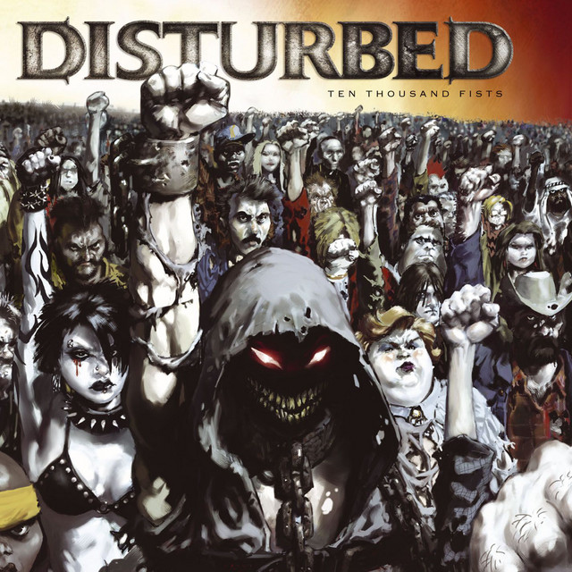

A história por trás da criação da música "Decadence", lançada pela banda americana de Metal Disturbed em seu terceiro álbum de estúdio,
Ten Thousand Fists (2005) .
Está profundamente ligada à saúde mental, depressão e ao ciclo autodestrutivo da dor emocional.
